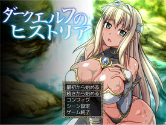
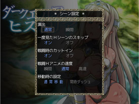

＜タイトル画面時の操作＞
|  |
①最初から始める ゲームを最初から始めることが出来ます。 ②続きから始める 今までにセーブした場面からプレイ出来ます。 ③コンフィグ ※下記に詳細があります。 ④シーン設定 ※下記に詳細があります。 ⑤ゲーム終了 ゲームを終了してＷｉｎｄｏｗｓに戻ります。 |
＜コンフィグ＞
 |
①BGMボリューム BGMの音量を調整します ②ボイスボリューム ボイスの音量を調整します ③BGVボリューム Hシーンなどで流れるバックグラウンド ボイスの音量を調整します ④キャラクターボイス オンであり、オフでなしになります ⑤バックグラウンドボイス オンであり、オフでなしになります ⑥メッセージ表示速度 メッセージの表示速度を調整します ⑦自動改ページ待ち時間 オートモード時の文字送り時間を調整します |
＜シーン設定＞
|  |
①演出 CGの表示までの時間などを調整します ②一度見たHシーンのスキップ オンでスキップするかどうかの選択肢を 表示します ③戦闘時のカットイン カットインのあるスキルで表示するかしないか を選ぶことが出来ます ④戦闘Hアニメの速度 Hアニメの速度です。 瞬間の場合は表示しません。 ⑤移動時の設定 常時ダッシュの場合、 shiftを押してある間は通常移動になります。 |